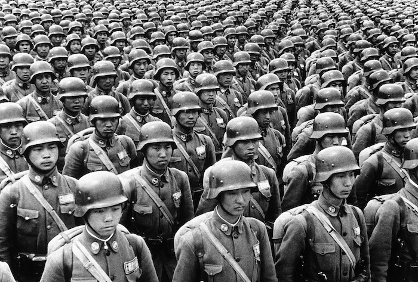

What Caused WWII?
The Unfair Treaty
- Germany had to pay for a lot of war reparation (132,000,000,000 German Mark; 2,459,543,126,740.85 Thai Baht), which took 92 years to pay off. It also had to get rid of its artillery, decrease its forces, and give up its occupied territories as stated in the Treaty of Versailles.
- Economy collapses
- Unemployment rises
- Adolf Hitler rose to power
- Nationalism and arms industry sprung up
Militarism Grows

- More and more deadly weapons started to accumulate
- Adds stress between countries
Failure of the League of Nations
- The League of Nations’ goals are to prevent wars from happening again, as well as supporting countries to have less military weapons.
- The League of Nations couldn’t do its goals since they have no soldiers.
The Japanese Empire Expands Its Power
- The Japanese military started to play its roles in politics and brought fascism into Japan.
- Then they invaded Manchuria, and founded its puppet state Manchukuo.
- They also invaded other countries in the Pacific Ocean e.g. The Philippines and Papua New Guinea.